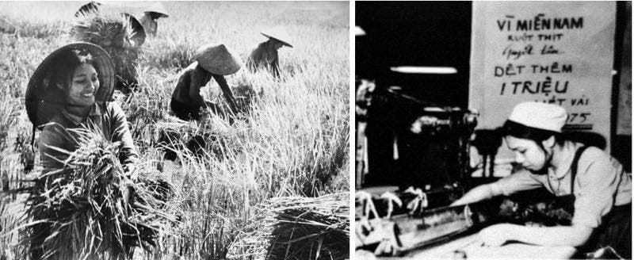

Ngày 8/3 hàng năm là dịp để cả thế giới cùng tôn vinh những người phụ nữ - những người mẹ, người vợ, người chị, người em đã và đang góp phần làm cho cuộc sống thêm tươi đẹp. Đây không chỉ là ngày lễ, mà còn là cơ hội để chúng ta thể hiện lòng biết ơn và sự trân trọng dành cho họ.
Ngày 8/3 không chỉ gắn liền với phong trào đấu tranh vì quyền lợi của phụ nữ trên thế giới mà còn mang dấu ấn đặc biệt trong lịch sử dân tộc.Từ đầu thế kỷ 20, phụ nữ Việt Nam đã tham gia nhiều phong trào yêu nước.Tiêu biểu là cuộc khởi nghĩa Hai Bà Trưng (năm 40-43 TCN), được coi là biểu tượng cho tinh thần đấu tranh giành độc lập và quyền bình đẳng của phụ nữ Việt Nam.Trong cuộc kháng chiến chống Pháp và chống Mỹ, phụ nữ Việt Nam đóng vai trò quan trọng trong nhiều phong trào cách mạng, như phong trào "Ba đảm đang" (đảm đang sản xuất, đảm đang chiến đấu, đảm đang gia đình).Ngày 8/3 không chỉ là ngày tôn vinh phụ nữ, mà còn là dịp để nhắc lại vai trò quan trọng của họ trong gia đình, xã hội và nền kinh tế. Hội Liên hiệp Phụ nữ Việt Nam ra đời năm 1930 đã đóng vai trò lớn trong việc thúc đẩy quyền lợi và bình đẳng giới.

Mỗi ngày như một đóa hoa,
Tỏa hương,khoe sắc,đậm đà yêu thương,
Nụ cười luôn mãi vấn,
Bình yên,may mắn,đời thường thăng hoa!